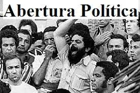

Abertura política
A Abertura Política foi o nome dado a uma série de ações cujo objetivo era realizar
uma transição lenta, gradual e segura para a democracia nos últimos dois mandatos do
regime militar no Brasil.
Entre os anos de 1964 e 1974 o regime militar esteve na mão de três generais e
viveu seu período de maior endurecimento. A partir da edição de uma série de Atos Institucionais,
Castelo Branco, Costa e Silva e Médici promoveram o combate aos partidos, militantes e
organizações de esquerda através da censura, da perseguição política e até mesmo da
tortura e da execução.
